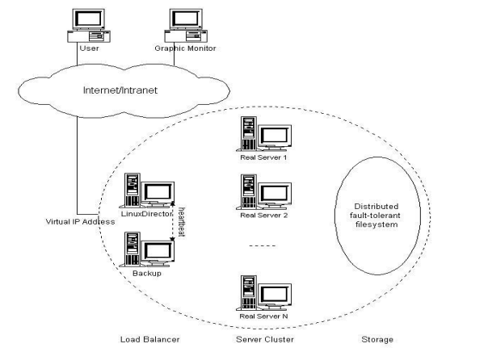
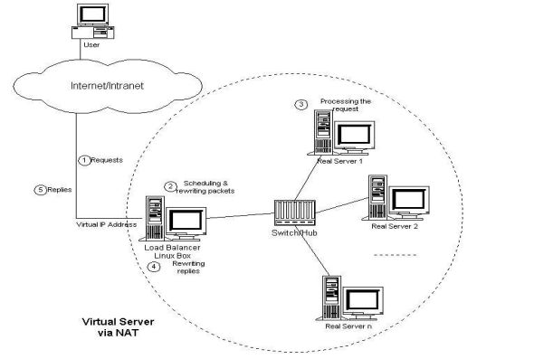
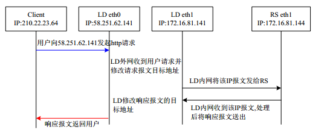
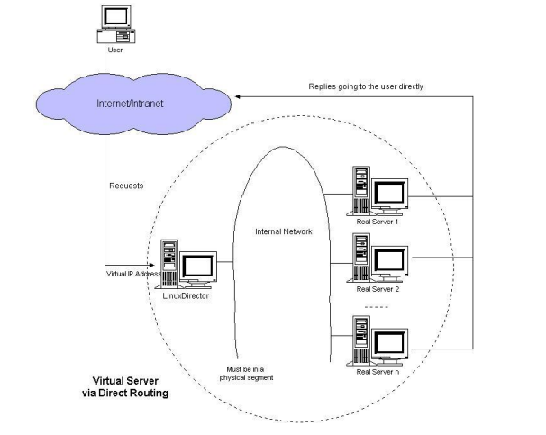
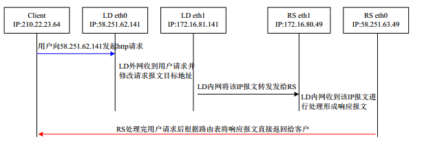
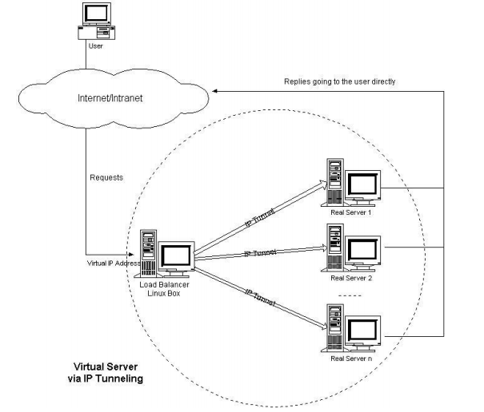
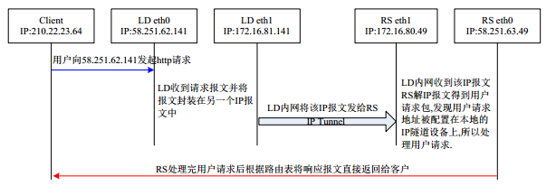

一、Cluster集群概念
集群(cluster)技术是一种较新的技术，通过集群技术，可以在付出较低成本的情况
下获得在性能、可靠性、灵活性方面的相对较高的收益，其任务调度则是集群系统中
的核心技术。
系统扩展方式：
Scale UP：向上扩展,增强
Scale Out：向外扩展,增加设备，调度分配问题，Cluster
Cluster：集群,为解决某个特定问题将多台计算机组合起来形成的单个系统
Linux Cluster类型：
LB：Load Balancing，负载均衡
HA：High Availiablity，高可用，SPOF（single Point Of failure）
MTBF：Mean Time Between Failure 平均无故障时间
MTTR：Mean Time To Restoration（ repair）平均恢复前时间
A=MTBF/（MTBF+MTTR） (0,1)：99%, 99.5%, 99.9%, 99.99%, 99.999%
HPC：High-performance computing，高性能 www.top500.org
分布式系统：
分布式存储：云盘
分布式计算：hadoop，Spark
分布式文件系统：fastfs
集群与分布式：
简单来说集群是解决高可用的，而分布式是解决高性能、高并发的
集群：同一个业务，部署在多个服务器上
分布式：一个业务分拆多个子业务，部署在不同的服务器上
Cluster分类
LB Cluster的实现
硬件
F5 Big-IP
Citrix Netscaler
A10 A10
软件
lvs：Linux Virtual Server
nginx：支持七层调度
haproxy：支持七层调度
ats：apache traffic server，yahoo捐助
perlbal：Perl 编写
pound
基于工作的协议层次划分：
传输层（通用）：DPORT
LVS：
nginx：stream
haproxy：mode tcp
应用层（专用）：针对特定协议，自定义的请求模型分类
proxy server：
http：nginx, httpd, haproxy(mode http), …
fastcgi：nginx, httpd, …
mysql：mysql-proxy, …
会话保持：负载均衡
(1)session sticky：同一用户调度固定服务器
Source IP：LVS sh算法（对某一特定服务而言）
Cookie
(2)session replication：每台服务器拥有全部session
session multicast cluster
(3)session server：专门的session服务器
Memcached，Redis
HA集群实现方案
keepalived:vrrp协议
ais:应用接口规范
heartbeat
cman+rgmanager(RHCS)
coresync_pacemaker
二、LVS介绍
LVS：Linux Virtual Server，负载调度器，集成内核 章文嵩 阿里
官网：http://www.linuxvirtualserver.org/
VS：Virtual Server，负责调度
RS：Real Server，负责真正提供服务
L4：四层路由器或交换机
工作原理：VS根据请求报文的目标IP和目标协议及端口将其调度转发至某RS，根据调度
算法来挑选RS
iptables/netfilter：
iptables：用户空间的管理工具
netfilter：内核空间上的框架
流入：PREROUTING –> INPUT
流出：OUTPUT –> POSTROUTING
转发：PREROUTING –> FORWARD –> POSTROUTING
DNAT：目标地址转换； PREROUTING
LVS集群的通用结构：

LVS工作原理
LVS集群类型中的术语：
VS：Virtual Server，Director Server(DS)，Dispatcher(调度器)，Load Balancer
RS：Real Server(lvs), upstream server(nginx)，backend server(haproxy)
CIP：Client IP
VIP: Virtual serve IP VS外网的IP
DIP: Director IP VS内网的IP
RIP: Real server IP
访问流程：CIP <–> VIP == DIP <–> RIP
lvs：ipvsadm/ipvs
ipvsadm：用户空间的命令行工具，规则管理器
用于管理集群服务及RealServer
ipvs：工作于内核空间netfilter的INPUT钩子上的框架
lvs集群的类型：
lvs-nat：修改请求报文的目标IP,多目标IP的DNAT(重点)
lvs-dr：操纵封装新的MAC地址(重点)
lvs-tun：在原请求IP报文之外新加一个IP首部
lvs-fullnat：修改请求报文的源和目标IP
三、LVS模式与调度算法
lvs-nat模式
本质是多目标IP的DNAT，通过将请求报文中的目标地址和目标端口修改为某挑
出的RS的RIP和PORT实现转发
LVS-NAT的体系结构如下图所示：

（1）RIP和DIP应在同一个IP网络，且应使用私网地址；RS的网关要指向DIP
（2）请求报文和响应报文都必须经由Director转发，Director易于成为系统瓶颈
（3）支持端口映射，可修改请求报文的目标PORT
（4）VS必须是Linux系统，RS可以是任意OS系统
LVS-NAT数据流程时序图：

LVS-DR模式
LVS-DR：Direct Routing，直接路由，LVS默认模式,应用最广泛,通过为请求报文重新
封装一个MAC首部进行转发，源MAC是DIP所在的接口的MAC，目标MAC是某挑选出
的RS的RIP所在接口的MAC地址；源IP/PORT，以及目标IP/PORT均保持不变
LVS-DR的体系结构如下图所示：

（1） Director和各RS都配置有VIP
（2） 确保前端路由器将目标IP为VIP的请求报文发往Director
在前端网关做静态绑定VIP和Director的MAC地址
在RS上使用arptables工具
arptables -A IN -d $VIP -j DROP
arptables -A OUT -s $VIP -j mangle –mangle-ip-s $RIP
在RS上修改内核参数以限制arp通告及应答级别
/proc/sys/net/ipv4/conf/all/arp_ignore
/proc/sys/net/ipv4/conf/all/arp_announce
（3）RS的RIP可以使用私网地址，也可以是公网地址；RIP与DIP在同一IP网络；
RIP的网关不能指向DIP，以确保响应报文不会经由Director
（4）RS和Director要在同一个物理网络
（5）请求报文要经由Director，但响应报文不经由Director，而由RS直接发往
Client
（6）不支持端口映射（端口不能修败）
（7）RS可使用大多数OS系统
LVS-DR数据流程时序图：

lvs-tun模式
转发方式：不修改请求报文的IP首部（源IP为CIP，目标IP为VIP），而在原IP报文
之外再封装一个IP首部（源IP是DIP，目标IP是RIP），将报文发往挑选出的目标
RS；RS直接响应给客户端（源IP是VIP，目标IP是CIP）
LVS-TUN的体系结构如图所示：

(1) DIP, VIP, RIP都应该是公网地址
(2) RS的网关一般不能指向DIP
(3) 请求报文要经由Director，但响应不能经由Director
(4) 不支持端口映射
(5) RS的OS须支持隧道功能
LVS-TUN数据流程时序图：

LVS-FULLNAT模式
lvs-fullnat：通过同时修改请求报文的源IP地址和目标IP地址进行转发
CIP –> DIP
VIP –> RIP
(1) VIP是公网地址，RIP和DIP是私网地址，且通常不在同一IP网络；因此，
RIP的网关一般不会指向DIP
(2) RS收到的请求报文源地址是DIP，因此，只需响应给DIP；但Director还
要将其发往Client
(3) 请求和响应报文都经由Director
(4) 支持端口映射
注意：此类型kernel默认不支持
三种 主要IP 负载均衡技术比较：

lvs-nat与lvs-fullnat：请求和响应报文都经由Director
lvs-nat：RIP的网关要指向DIP
lvs-fullnat：RIP和DIP未必在同一IP网络，但要能通信
lvs-dr与lvs-tun：请求报文要经由Director，但响应报文由RS直接发往Client
lvs-dr：通过封装新的MAC首部实现，通过MAC网络转发
lvs-tun：通过在原IP报文外封装新IP头实现转发，支持远距离通信
lvs-nat 的优点是服务器可以运行任何支持 TCP/IP 的操作系统，它只需要
一个 IP 地址配置在调度器上，服务器组可以用私有的 IP 地址。缺点是它的伸缩
能力有限，当服务器结点数目升到 20 时，调度器本身有可能成为系统的新瓶颈，
因为在 lvs-nat 中请求和响应报文都需要通过负载调度器。
lvs-dr优点是负载调度器可以处理大量的请求，因为调度器只处理客户到服
务器端的连接，响应数据可以直接从独立的网络路由返回给客户，这可以极大地
提高 LVS 集群系统的伸缩性。缺点是要求负载调度器与实际服务器都有一块网
卡连在同一物理网段上，服务器网络设备（或者设备别名）不作 ARP 响应，或
者能将报文重定向（Redirect）到本地的 Socket 端口上。
lvs-tun 的优点是负载调度器可以处理大量的请求，它甚至可以调度百台以
上的服务器（同等规模的服务器），而它不会成为系统的瓶颈，因为负载调度器
只将请求调度到不同的后端服务器，后端服务器将应答的数据直接返回给用户。
LVS的调度算法
轮训算法 加权轮训算法 最小连接算法 加权最下连接算法 …..
LVS Scheduling Method LVS的调度方法：
1.Fixed Scheduling Method 静态调度方法
(1).RR 轮询
(2).WRR 加权轮询
(3).SH 源地址hash；实现session sticky，源IP地址hash；将来自于同一
个IP地址的请求始终发往第一次挑中的RS，从而实现会话绑定
(4).DH 目标地址hash；目标地址哈希，将发往同一个目标地址的请求始终转
发至第一次挑中的RS，典型使用场景是正向代理缓存场景中的负载均
衡，如：宽带运营商
2.Dynamic Scheduling Method 动态调度方法
(1).LC 最少连接；适用于长连接应用
Overhead=activeconns*256+inactiveconns
(2).WLC 加权最少连接(默认调度方法)
Overhead=(activeconns*256+inactiveconns)/weight
(3).SED 最少期望延迟
Overhead=(activeconns+1)*256/weight
(4).NQ 第一轮均匀分配，后续SED
(5).LBLC 基于本地的最少连接；动态的DH算法，使用场景：根据负载状态实现正向代理
(6).LBLCR 带复制的基于本地的最少连接；带复制功能的LBLC解决LBLC负载不均衡
问题，从负载重的复制到负载轻的RS
四、ipvsadm命令
核心功能：
集群服务管理：增、删、改
集群服务的RS管理：增、删、改
查看
ipvsadm -A|E -t|u|f service-address [-s scheduler] [-p [timeout]] [-M netmask] [–pe
persistence_engine] [-b sched-flags]
ipvsadm -D -t|u|f service-address 删除
ipvsadm –C 清空
ipvsadm –R 重载
ipvsadm -S [-n] 保存
ipvsadm -a|e -t|u|f service-address -r server-address [options]
ipvsadm -d -t|u|f service-address -r server-address
ipvsadm -L|l [options]
ipvsadm -Z [-t|u|f service-address]
管理集群服务：增、改、删
增、改：
ipvsadm -A|E -t|u|f service-address [-s scheduler] [-p [timeout]]
删除：
ipvsadm -D -t|u|f service-address
service-address：
-t|u|f：
-t: TCP协议的端口，VIP:TCP_PORT
-u: UDP协议的端口，VIP:UDP_PORT
-f：firewall MARK，标记，一个数字
[-s scheduler]：指定集群的调度算法，默认为wlc
管理集群上的RS：增、改、删
增、改：ipvsadm -a|e -t|u|f service-address -r server-address [-g|i|m] [-w weight]
删：ipvsadm -d -t|u|f service-address -r server-address
server-address：
rip[:port] 如省略port，不作端口映射
选项：
lvs类型：
-g: gateway, dr类型，默认
-i: ipip, tun类型
-m: masquerade, nat类型
-w weight：权重
清空定义的所有内容：ipvsadm –C
清空计数器：ipvsadm -Z [-t|u|f service-address]
查看：ipvsadm -L|l [options]
–numeric, -n：以数字形式输出地址和端口号
–exact：扩展信息，精确值
–connection，-c：当前IPVS连接输出
–stats：统计信息
–rate ：输出速率信息
ipvs规则： /proc/net/ip_vs
ipvs连接：/proc/net/ip_vs_conn